Menghasilkan lulusan unggul, kompeten, dan berdaya saing global
Pelajari Lebih LanjutMenjadi program studi kimia yang unggul dalam pengembangan ilmu pengetahuan dan teknologi kimia berbasis riset untuk kesejahteraan masyarakat pada tahun 2030.
Menghasilkan sarjana kimia yang memiliki kompetensi akademik dan profesional di bidang kimia serta mampu bersaing di tingkat nasional dan internasional.
S1 (Sarjana) - 8 Semester
Gelar: S.Si (Sarjana Sains)
Terakreditasi A oleh BAN-PT
SK No: 123/SK/BAN-PT/Akred/S/2024
Kurikulum berbasis KKNI dan MBKM
Total SKS: 144 SKS
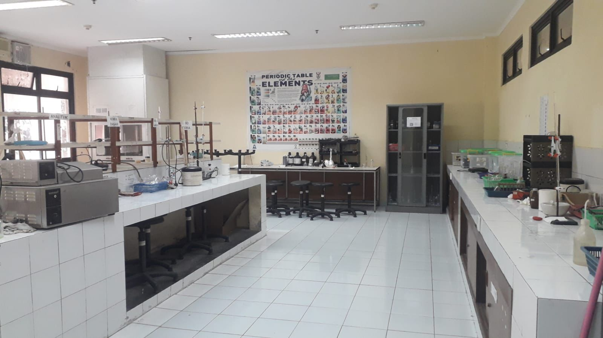
Lab. Kimia Dasar, Organik, Anorganik, Fisik, Analitik, dan Biokimia
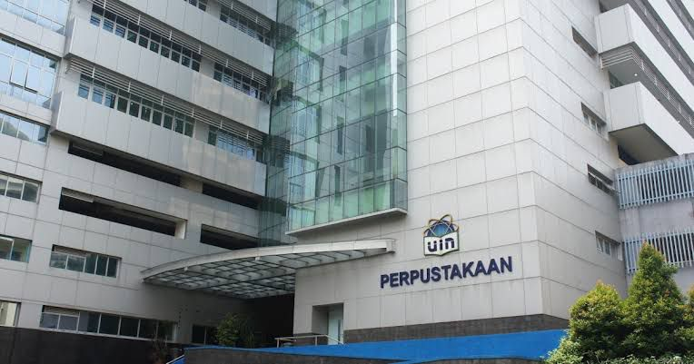
Koleksi buku dan jurnal kimia nasional dan internasional
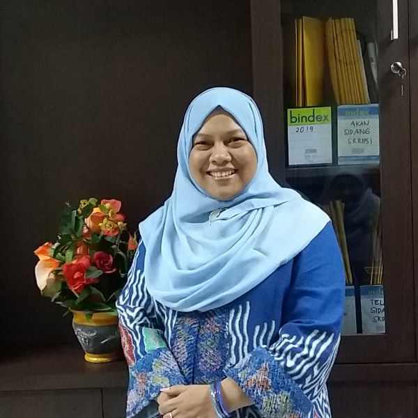
Ketua Program Studi
Spesialisasi: Kimia Lingkungan
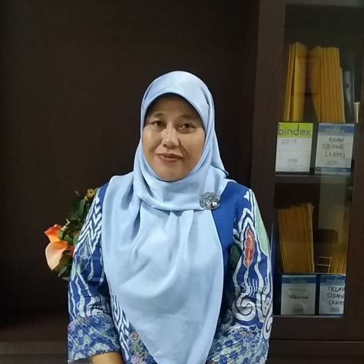
Sekretaris Program Studi
Spesialisasi: Kimia Analitik
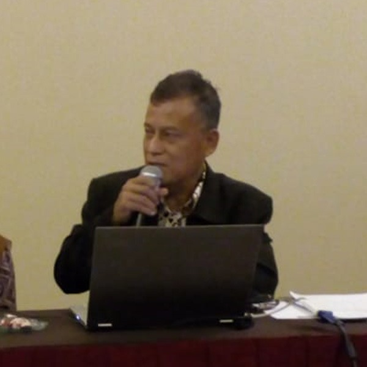
Dosen
Spesialisasi: Kimia Organik
Dosen
Spesialisasi:Biokimia
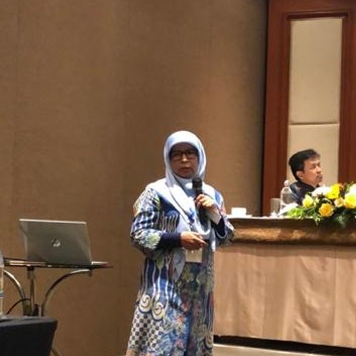
Dosen
Spesialisasi: Kimia Pangan
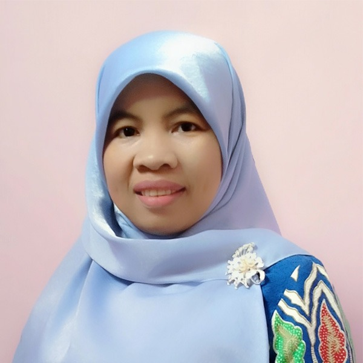
Dosen
Spesialisasi:kimia analitik
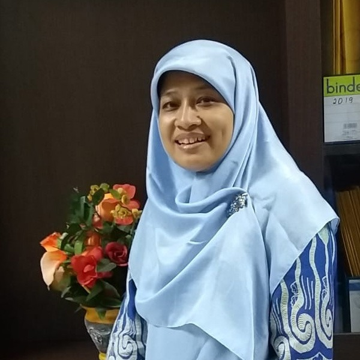
Dosen
Spesialisasi: Kimia pangan
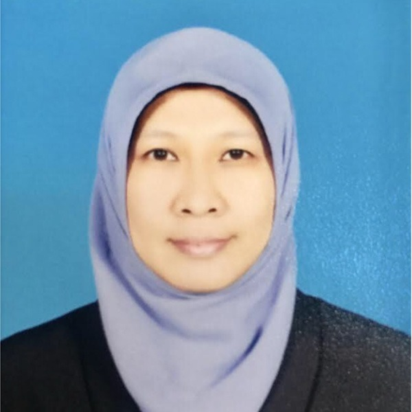
Dosen
Spesialisasi: Kimia Organik
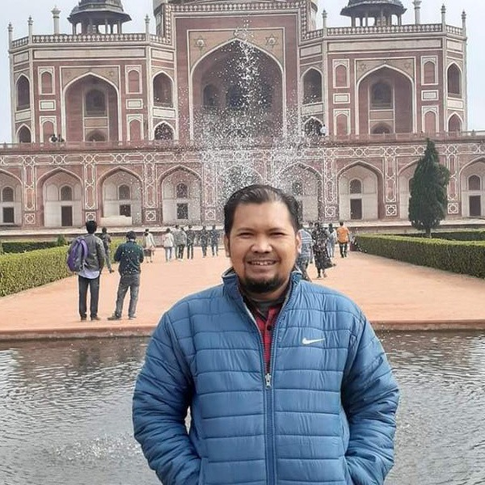
Dosen
Spesialisasi: Biokimia
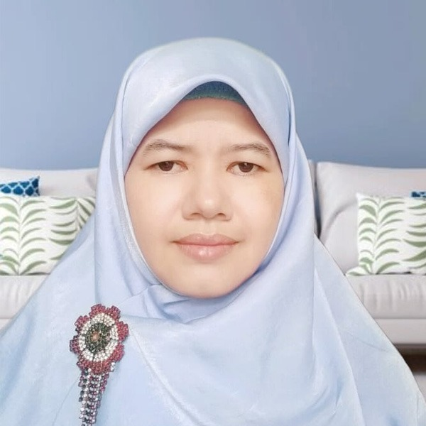
Dosen
Spesialisasi: Kimia Fisik
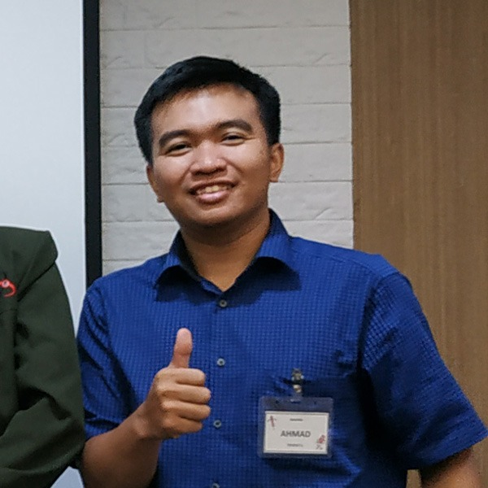
Dosen
Spesialisasi: Kimia Hayati
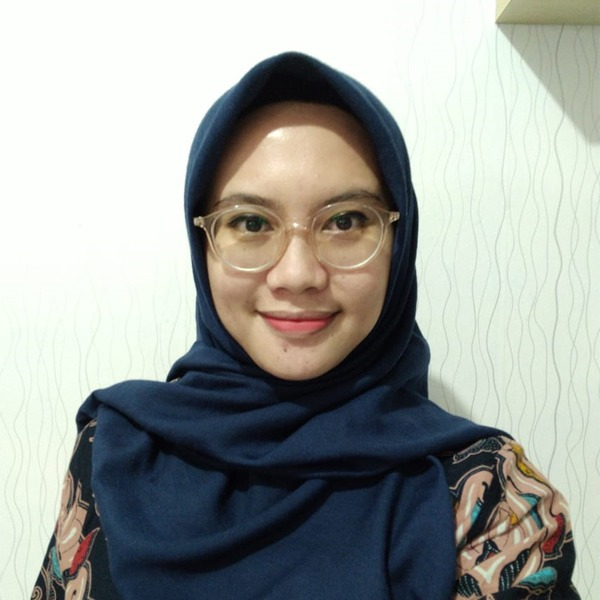
Dosen
Spesialisasi: Kimia Anorganik
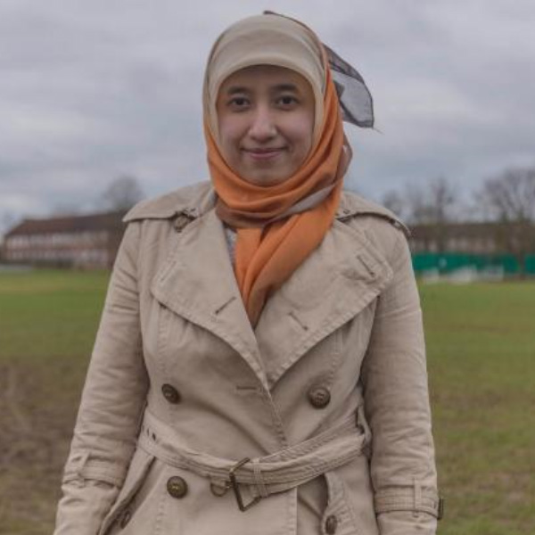
Dosen
Spesialisasi: Kimia Analitik
Jl. Ir H. Juanda No.95, Ciputat, Kec. Ciputat Tim., Kota Tanggerang Selatan, Banten 15412
(021) 7401925
humas@apps.uinjkt.ac.id
Senin - Jumat: 08.00 - 16.00 WIB